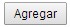
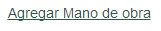
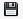
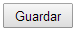

Agregar rubro
En la pantalla se encuentran disponibles los campos para cargar los datos del nuevo rubro, así como también la mano de obra y los materiales del mismo.
Agregado de materiales al nuevo rubro
Para dar de alta un material dentro del rubro, en la tabla de materiales haga click en 
Aparecerá una ventana emergente donde puede seleccionar el material deseado.
Una vez seleccionado un material de la lista desplegable, se completarán automáticamente los campos de unidad de medida y precio. En caso de necesitar cambiar estos valores, los mismos deberán ser modificados en la pantalla de materiales – editar material.
En caso de necesitar un material que no se encuentre en la lista, el mismo deberá ser dado de alta a través de la pantalla de materiales – agregar material.
Complete la cantidad estándar relativa al material en el rubro, y al aceptar, se habrá agregado a la lista de materiales del rubro.
Para cada material de la lista, se encuentran presentes los botones de editar
 y borrar
y borrar

En la edición es posible modificar la cantidad estándar ingresada anteriormente. Presionando se guardarán los cambios en la tabla
A través de la opción de borrar podemos quitar el material de la tabla de materiales del rubro.
Agregado de mano de obra al nuevo rubro
Para dar de alta una mano de obra dentro del rubro, en la tabla de mano de obra haga click en
Aparecerá una ventana emergente donde puede seleccionar la mano de obra deseada.
Una vez seleccionada una mano de obra de la lista desplegable, se completarán automáticamente los campos de unidad de medida y precio. En caso de necesitar cambiar estos valores, los mismos deberán ser modificados en la pantalla de mano de obra – editar mano de obra.
En caso de necesitar una mano de obra que no se encuentre en la lista, la misma deberá ser dada de alta a través de la pantalla de mano de obra – agregar mano de obra.
Complete la cantidad estándar relativa a la mano de obra en el rubro, y al aceptar, se habrá agregado a la lista de mano de obra del rubro.
Para cada mano de obra de la lista, se encuentran presentes los botones de editar y borrar
y borrar 
En la edición es posible modificar la cantidad estándar ingresada anteriormente.
Presionando se guardarán los cambios en la tabla.
A través de la opción de borrar podemos quitar el material de la tabla de materiales del rubro.
Una vez que hemos agregado todos los materiales y mano de obra, al presionar el botón  se harán efectivos los cambios.
Si de lo contrario no quiere guardar los cambios, el botón  lo redirigirá a la página de edición, y a través de la barra de navegación en la parte superior izquierda podrá volver al menú principal.
lo redirigirá a la página de edición, y a través de la barra de navegación en la parte superior izquierda podrá volver al menú principal.